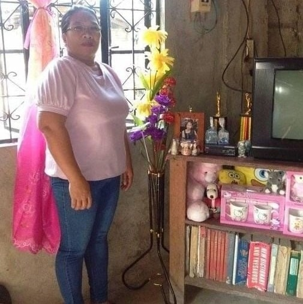

Arturo Nocido Pallomina
Father
Bachelor of Science in Agriculture
49 Years Old
July 17, 1971

Ma. Dolores Malaque Pallomina
Mother
Bachelor of Science in Agriculture
51 Years Old
January 15, 1970

Charline Grace Pallomina Panilawon
Eldest Child
Bachelor of Elementary Education
28 Years Old
November 15, 1992

Donna Jane Pallomina Martinez
Middle Child
Bachelor of Secondary Education Major in English
24 Years Old
July 4, 1996